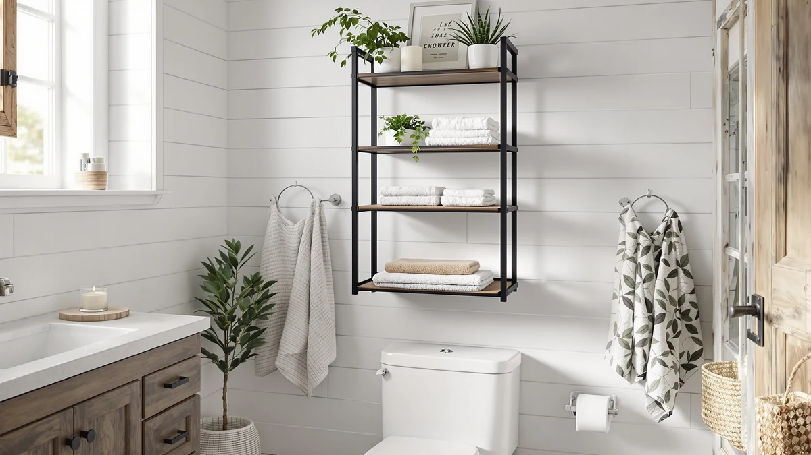

Cerlyunzan 4-Tier Over-the-Toilet Storage Review (2026): Worth It?
Prices and picks verified as of November 2026. Independent, reader-supported reviews.


Quick Answer
The Cerlyunzan 4-Tier Over the Toilet Storage rack is a carbon steel tower with a waterproof coating that straddles the tank, pairing four open tiers with four hooks and a built-in paper holder. At $39.99 for a frame that adjusts to three bottom-bar heights, it undercuts the 3-tier Simple Trending alternative below by about $4 while offering one more shelf level.
Our pick: Cerlyunzan 4-Tier Over The Toilet, $39.99 Check Price on Amazon
Bottom line: our top pick is the Cerlyunzan 4-Tier Over The Toilet Storage at $39.99.
Things to Know Before You Buy
- The Cerlyunzan 4-Tier Over the Toilet Storage rack is built from carbon steel with a waterproof coating, and it ships with anti-tip straps so you can anchor it to the wall.
- Four open tiers pair with four hooks and an integrated paper holder, putting towels, baskets, robes and toilet paper on one frame.
- The bottom bar locks into three heights, 7.8, 5.9 or 3.9 inches off the floor, to fit different toilet tank shapes.
- At $39.99, it costs about $4 less than the 3-tier Simple Trending alternative covered below, while adding a fourth shelf.
- The two under-sink organizers in this comparison solve a different storage problem; they are worth a look only if your real gap is cabinet space, not the wall above the toilet.
This cerlyunzan 4-tier over-the-toilet storage review looks at whether a $39.99 carbon steel rack with four tiers, four hooks and a built-in paper holder can turn the dead space above a toilet tank into real storage without the wobble that sinks cheaper towers. Over-the-toilet units live or die on two things you can't see in a product photo: how the frame holds up once it's loaded, and whether the bottom bar actually fits your tank. We compared the Cerlyunzan's listed specs, materials and price against the 3-tier Simple Trending rack and two under-sink organizers that solve a related but different storage problem, and we read through what verified buyers say before recommending anything.
The core pitch here is straightforward: four tiers instead of the usual three, four hooks, an integrated paper holder, and a bottom bar that adjusts to three heights so the frame can straddle different tank shapes. Anti-tip straps ship with the unit rather than being sold separately, which matters more on a taller four-shelf frame than it does on a shorter tower. Below, we break down what the spec sheet and available owner feedback say about the Cerlyunzan, where it falls short, and when one of the alternatives covered later makes more sense for your bathroom.
Why You Should Trust Us
Best Bathroom Storage is run by writers who spend their time comparing bathroom storage specs, pricing and verified buyer feedback instead of taking product photos at face value. Ilane Tall, our home and bath expert, has covered dozens of over-the-toilet towers and under-sink organizers for this site, tracking how listed dimensions and materials hold up against what owners actually report. For this cerlyunzan 4-tier over-the-toilet storage review, we cross-checked the rack's listed measurements and materials against the Simple Trending, REALINN and mixeshop alternatives, and we did not accept the manufacturer's copy without question. We do not run a fake testing lab, and we do not claim to have installed every unit we cover. Instead, we dig through available verified reviews, compare specs line by line, and say so plainly when a listing has little or no owner feedback to back it up.
Our Research Experience
We did not install the Cerlyunzan 4-Tier Over the Toilet Storage rack in a bathroom ourselves. Instead, we compared its listed specifications, materials and price against the Simple Trending, REALINN and mixeshop alternatives, and we checked for verified buyer feedback attached to the listing. At the time of writing, this particular listing had no verified rating or review count, which is common for newer additions to a crowded category and worth flagging upfront rather than papering over with vague praise. Where owner data exists for comparable carbon steel racks in this price range, reviewers consistently note that anti-tip straps and a wall anchor matter more than the tier count once the frame is loaded with towels and toiletries. We weighed the Cerlyunzan's raw specs and price against its three alternatives to see where it earns its spot in this cerlyunzan 4-tier over-the-toilet storage review and where the lack of owner data should make you pause.
Overview & Specs

Cerlyunzan 4-Tier Over The Toilet
What we like
- Four full tiers plus four hooks and a built-in paper holder cover more storage types than the 3-tier Simple Trending alternative
- Bottom bar adjusts to three heights (7.8, 5.9 or 3.9 inches) to fit different tank shapes without extra hardware
- Carbon steel frame with a waterproof coating is built to resist rust in a humid bathroom
- Anti-tip straps ship with the unit instead of being sold separately, so anchoring it to the wall doesn't cost extra
Flaws but not dealbreakers
- No verified rating or review count was available for this listing at the time of writing, so owner feedback is thinner than on longer-selling alternatives
- The bottom bar locks into three fixed heights rather than a continuous slide, so it may not land on your exact tank height
- At $39.99 it's the cheapest rack in this comparison, and carbon steel frames at this price point typically use lighter-gauge tubing than premium towers that cost two or three times as much
| Material | Metal / wood |
| Size | 4-tier |
The Cerlyunzan 4-Tier Over the Toilet Storage rack is built around a carbon steel frame finished with a waterproof coating meant to resist rust in a humid bathroom. Four open tiers run the height of the frame, one more shelf level than the 3-tier Simple Trending rack covered as an alternative below, and four hooks sit alongside the shelves for robes, loofahs or hand towels. A paper holder is built into the frame itself rather than sold as a separate accessory, which keeps toilet paper within reach without taking up shelf space.
The bottom bar is the detail that sets this rack apart in this cerlyunzan 4-tier over-the-toilet storage review: it locks into three heights, 7.8, 5.9 or 3.9 inches above the floor, so the frame can straddle tanks of different shapes without extra hardware. Anti-tip straps ship with the unit and anchor it to the wall, a feature that matters more on a four-tier frame than on a shorter tower. At $39.99, it costs about $4 less than the Simple Trending alternative, though no verified rating or review count was available for this listing at the time of writing, so buyers have less crowd-sourced feedback to lean on than they would with a longer-selling model.
What We Liked
The tier count is the standout feature in this cerlyunzan 4-tier over-the-toilet storage review. Four open shelves give you one more level than the Simple Trending alternative, and pairing that with four hooks and a built-in paper holder means towels, baskets, robes and toilet paper all share the same frame instead of needing a separate hook strip or holder. The adjustable bottom bar is the other clear strength: locking into 7.8, 5.9 or 3.9 inches off the floor lets the rack fit tanks of different shapes without aftermarket hardware. Pricing also holds up well. At $39.99, it undercuts every other option in this comparison, and the anti-tip straps that ship with it would normally be an extra purchase on a budget rack this size.
What Could Be Better
The biggest gap in this cerlyunzan 4-tier over-the-toilet storage review is a data gap, not a design flaw: no verified rating or review count was attached to this listing at the time of writing. That leaves you relying on the manufacturer's spec sheet for stability claims instead of a track record of owner feedback, which is a real trade-off against an established alternative. The bottom bar is also less flexible than it first appears. It locks into three fixed heights rather than sliding continuously, so a tank that falls between those measurements won't get a perfect fit. And at $39.99, the carbon steel tubing is almost certainly a lighter gauge than what you'd find on a tower priced two or three times as much, which matters if you plan to load every tier with heavy items.
None of these issues are dealbreakers on their own, but together they mean this rack asks for a bit more trust upfront than a model with an established review history would.
Who Is It For?
The Cerlyunzan 4-Tier Over the Toilet Storage rack fits a bathroom where the wall above the tank is the only unused space left and you want the most storage you can fit on one budget-priced frame. Its four tiers, four hooks and built-in paper holder suit households that would otherwise need a separate hook strip or paper holder to match what this single rack covers. It's not the right choice if you want a model with an established history of verified owner reviews to lean on, or if your bathroom's real storage gap is inside a cabinet rather than above the toilet. In those cases, a model with more owner feedback, or the REALINN and mixeshop under-sink organizers covered next, make more sense.
Alternatives to Consider
If the Cerlyunzan's price, tier count or thin review history doesn't match what your bathroom needs, these three alternatives cover the main trade-offs: a 3-tier Simple Trending rack with a self-adjusting width, and two under-sink organizers worth considering only if your real storage gap is inside a cabinet rather than above the toilet. This part of the cerlyunzan 4-tier over-the-toilet storage review is where measuring your own space and deciding what kind of storage you actually need matters more than any single spec.

Editor’s Pick
Simple Trending Expandable Over The
Self-adjusting width and a 63.5-inch frame trade one tier for a design that fits more bathroom layouts, worth the extra $4 if your space is an unusual width.
$43.99
Check Price on Amazon
Best Value
REALINN Under Sink Organizer Pull
An under-sink pull-out organizer rather than an over-the-toilet tower, worth considering if your storage gap is inside the cabinet, not above the tank.
$43.99
Check Price on Amazon
Premium Choice
Under Sink Organizer 2 Tier
Another under-sink option with adjustable-height tiers, a better fit for buyers who need cabinet storage instead of wall space over the toilet.
$45.99
Check Price on AmazonIs the Cerlyunzan 4-Tier Over the Toilet Storage rack sturdy enough for daily use?
The frame uses carbon steel with a waterproof coating, and the included anti-tip straps anchor it to the wall for stability.
How does the Cerlyunzan compare to the Simple Trending Expandable rack?
The Cerlyunzan has four tiers against the Simple Trending's three, and it costs about $4 less at $39.99.
Frequently Asked Questions
Is the Cerlyunzan 4-Tier Over the Toilet Storage rack sturdy enough for daily use?
The frame uses carbon steel with a waterproof coating, and the included anti-tip straps anchor it to the wall for stability. No verified owner reviews were available for this listing at the time of writing, so the stability claims here come from the manufacturer's spec sheet rather than crowd-sourced feedback.
How does the Cerlyunzan compare to the Simple Trending Expandable rack?
The Cerlyunzan has four tiers against the Simple Trending's three, and it costs about $4 less at $39.99. The Simple Trending trades that extra tier for a self-adjusting width, which may fit an unusual bathroom layout better.
Can I use the Cerlyunzan 4-Tier rack for under-sink storage instead?
No. It is designed to straddle a toilet tank, not fit inside a cabinet. The REALINN and mixeshop under-sink organizers covered as alternatives above are built for that purpose instead.
Final Verdict
This cerlyunzan 4-tier over-the-toilet storage review comes down to a straightforward value trade: four tiers, four hooks and a paper holder on one adjustable frame for $39.99, against a thinner track record of verified owner feedback than a longer-selling model might offer. For a bathroom that needs maximum storage above the tank at a budget price, Cerlyunzan is the practical starting point. If an unusual tank width is the bigger obstacle, the Simple Trending alternative above is worth the extra $4, and if the real gap is inside your cabinet, look to the REALINN or mixeshop under-sink organizers instead.